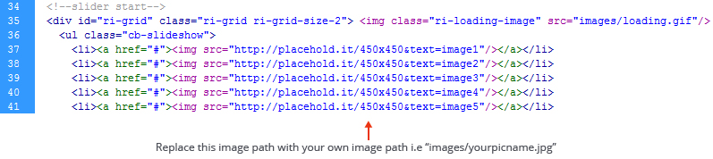
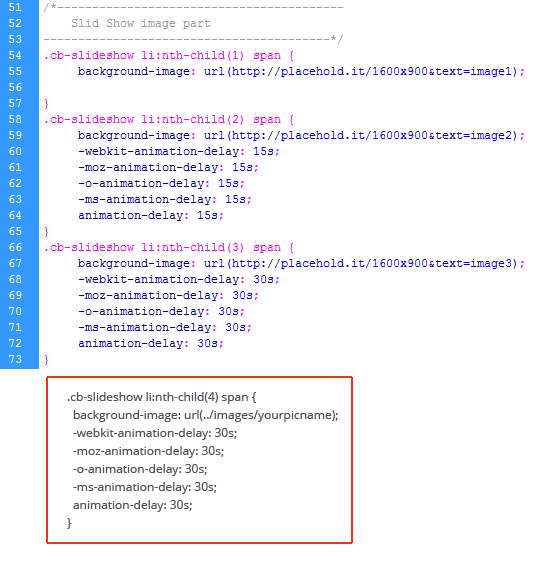
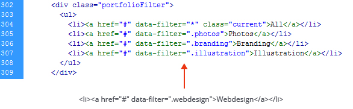
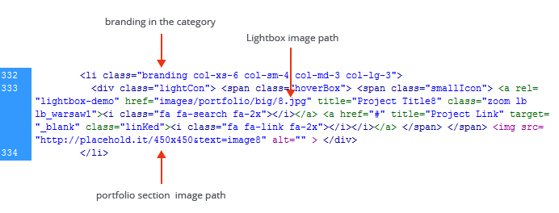

1. Background Settings
In order to add your own photos to the background slider, there are a few steps to make.
Template-1
1. Open the index.html file from "Template-1" folder.
2. Go to line 34 and replace the image path with your own image path. Currently in the template there are 50 images but you can use any number of images but try to use more images for better views.

3. Keep the image size square. In the the demo the image dimension is 450X450px.
Template-2
1. Open the slideshow.css file from "Template-2" folder.
2. You need to create the slideshow pictures. In the demo, the pictures are at least 1920x1080px in dimensions, representing the biggest most-common screen resolution. You can make them as big as you want, but is important to make them at least 1920x1080px to fit almost all the screens. Save the pictures inside the "images" folder with number sequence.
3. Go to line 52 and replace the image path with your own image path. Currently in the template there are 3 images but you can use any number of images. To add or delete the slider image add the css code in this file and add <li> <span> Image 04</span></li> in the index.html file.

Template-3
1. Open the index.html file from "Template-3" folder.
2. You need to create the slideshow pictures. In the demo, the pictures are at least 1920x1080px in dimensions, representing the biggest most-common screen resolution. You can make them as big as you want, but is important to make them at least 1920x1080px to fit almost all the screens. Save the pictures inside the "images" folder with number sequence.
3. Go to line 37 and replace the image path with your own image path.
<div class="bannerPart"> <img src="http://placehold.it/1600x900&text=image1" alt="" class="bannerImg"> </div>
2. Skill Chart Settings
Open index.html file and go to the line no 104. Change the data-percent="90" to adjust the Skill chart setings.
<div class=" col-xs-12 col-sm-6 col-md-6 col-lg-6 skills"> <span class="chart skilBg" data-percent="90"> <span class="percent"></span> </span>
3. Portfolio Settings
There are two area that you can set yourself.
1. Portfolio tabs
To add, delete or modify portfolio tabs open the index.html files and edit the code in the following section. In the below image is showing onlyhow to add a new tab.

To add a new tab you have to mention a data-filter name which will categories the images with the tabs data-filter=".webdesign"
2. Portfolio image
You can easily add new images in the portfolio section. Use the following code and edit the mention area according to your need.

4. Google Map Settings
Copy the sources embed code from https://maps.google.com/ and replace the code with this existing code
<iframe frameborder="0" scrolling="no" marginheight="0" marginwidth="0" src="https://maps.google.com/?ie=UTF8&ll=-37.817682,144.957595&spn=0.01134,0.026157&t=m&z=16&output=embed"></iframe>
5. Contact Form
To set up the contact form to send emails with the persons which are contacting you, open "contact.php" file and change the email from line 42 with your own email.
Line 42: $address = "example@example.net"; /
6. Related JavaScript Files
- js/jquery.min.js - Jquery is a JavaScript Library that simplifies HTML document traversing, event handling, animating, and Ajax interactions for rapid web development. The template is using the library hosted by google, for faster loading of the webpage.
- js/bootstrap.js - For simple transition effects, include transition.js once alongside the other JS files. If you're using the compiled (or minified) bootstrap.js, there is no need to include this—it's already there.
- js/jquery.easing.min.js - Uses the built in easing capabilities added In jQuery 1.1. To offer multiple easing options.
- js/jquery.easypiechart.js - Lightweight plugin to render simple, animated and retina optimized pie charts.
- js/jquery.gridrotator.js - A jQuery plugin for creating a responsive image grid that will switch images using different animations and timings.
- js/jquery.isotope.js - An exquisite jQuery plugin for magical layouts.
- js/jquery.placeholder.js - Placeholder is offering support for old browsers to recognize the 'placeholder' HTML5 tag inside the forms.
- js/jquery.jquery.contact.js - The code is animating the contact form when is used.
- js/jquery.ui.rlightbox.js - This code use for the lightbox effect for protfolio images.
- js/custom.js - Implementation of the plugins listed above and custom javascript functionality code for PaperLaunch.
- js/stickUp.js - A simple plugin that "sticks" an element to the top of the browser window while scrolling past it, always keeping it in view.
7. Sources and Credits
- Jquery - http://jquery.com/
- Bootstrap - http://getbootstrap.com/
- Easypiechart - https://github.com/rendro/easy-pie-chart
- Gridrotator - http://tympanus.net/codrops/2012/08/02/animated-responsive-image-grid/
- StickUp - https://github.com/LiranCohen/stickUp
- Placeholder - https://github.com/danbentley/placeholder
- Portfolo filter - http://www.webdesigntunes.com/coding/jquery-filterable-portfolio
- Rlightbox - http://ryrych.github.io/rlightbox2/
- Demo Artwork - http://dribbble.com/JustinHarrell
- Demo Artwork - http://dribbble.com/deviantmonk?page=8
- Open Sans Font - http://www.fontsquirrel.com/fonts/open-sans
- iconic fonts - http://fontawesome.io/